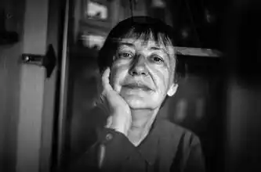

Народилася 8 листопада 1954 року в селі Куянівка на Сумщині в сім'ї вчителів.
1976 року з відзнакою закінчила філологічний факультет (відділення української мови та літератури) Київського державного університету імені Тараса Шевченка.
Працювала науковим співробітником Київського літературно-меморіального музею Максима Рильського, редактором відділу поезії видавництва "Молодь" і – понад двадцять років ‑ у редакції журналу "Українська культура". Член журі літературного конкурсу видавництва "Смолоскип" для молодих письменників. Авторка семи поетичних збірок: Та книги літературної критики "У контексті епохи". Збірки "Алергія" та "Готель Централь" отримували відзнаки національного конкурсу "Книга року" відповідно в 2000 та 2005 роках. Двічі відзначена журналом "Сучасність" у номінації "Кращий вірш року"; також лауреатка американського журналу "Аgnі" (разом з перекладачками Вірляною Ткач та Вандою Фіппс) за кращу перекладну поезію (поема "Травень" та вистава за нею , присвячені Чорнобильській катастрофі), та польського літературного журналу "Фраза" (добірка віршів у перекладах Богдана Задури). Учасниця низки поетичних фестивалів та письменницьких резиденцій. Вірші Наталки Білоцерківець перекладалися багатьма мовами світу і публікувалися в численних антологіях української поезії та літературних журналах. Вийшли також окремі перекладні книжки її віршів: польською "Róża i nóż" (2009) та англійською "Subterranean Fire" (2021). Лауреат Державної премії Грузії імені Володимира Маяковського для молодих поетів (1983) та нагороди Міжнародного літературного фестивалю у Словенії "Crystal Vilenicа" (2001). Авторка текстів кількох пісень, найвідомішою з яких є "Ми помрем не в Парижі" гурту "Мертвий півень". Останніми роками пише прозу. Також упорядкувала спогади своєї матері Анастасії Лисивець про Голодомор ("Скажи про щасливе життя", кілька видань як українською, так і іншими мовами) та Другу світову війну ("Чому ми лишилися жити", у книзі "Великий голод. Велика війна", 2008).